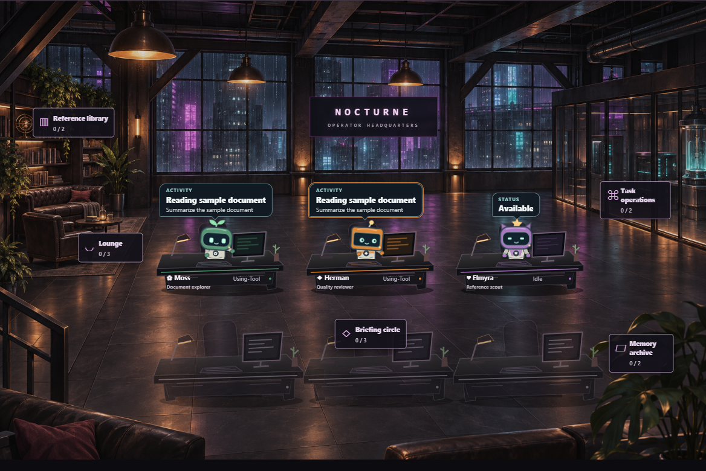
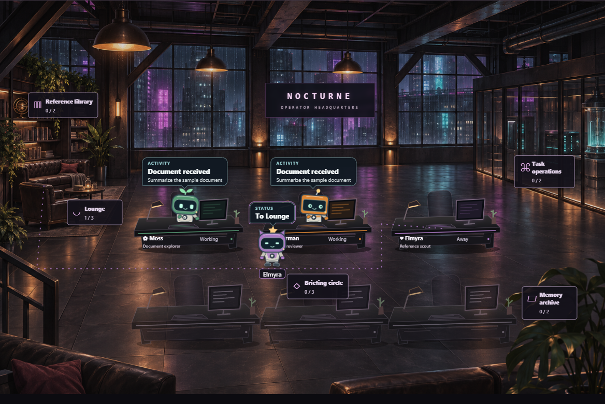
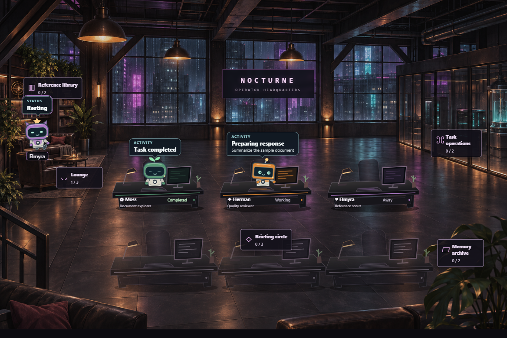
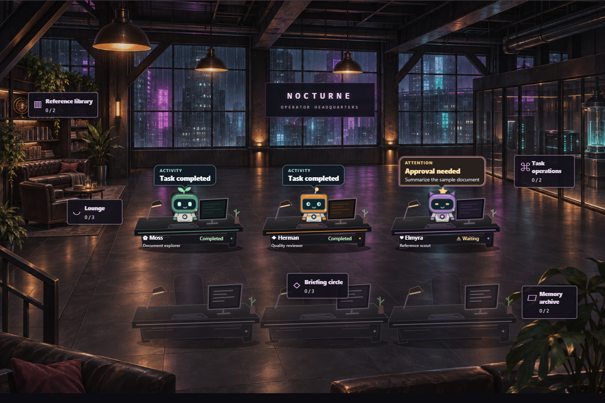
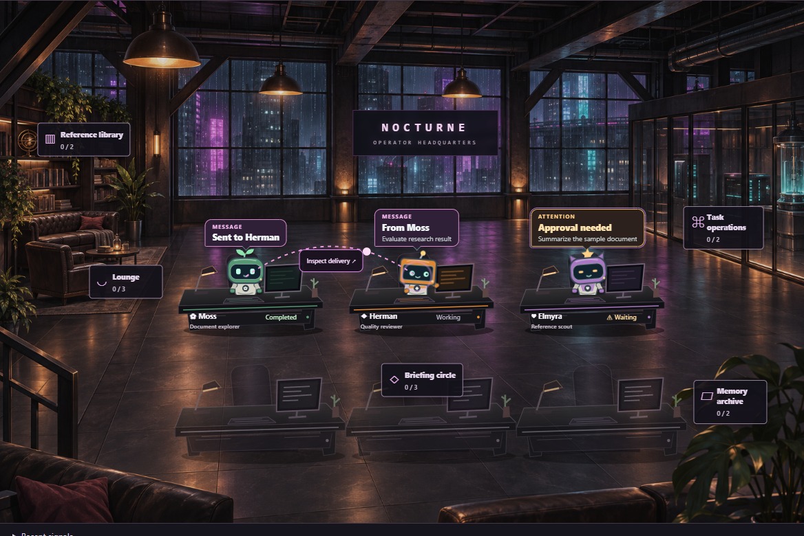
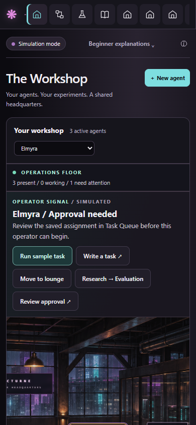

Fresh workspace: Moss, Herman, and Elmyra are present. No task has been assigned.
Two assignments, two independent runs

Both operators have a real sample-document call in their own run. Elmyra stays available. The small line in each activity bubble is the assignment.
Leave the desk and settle into the lounge

The dotted path follows the reserved move. Elmyra’s workstation remains assigned to her and reads Away.

Arrival updates occupancy, clears the path, and changes her feet and posture to the seated pose. She stays there until moved or called back for work.
A task that needs a person

The approval gate comes from Task Queue. Her operator signal offers Review approval; no tool runs before approval.
A recorded message crosses the room

Inspect delivery opens the Laboratory message: sender, recipient, timestamps, task IDs, delivery status and actual payload. The animation ends; the record remains.
Narrow-screen controls

The room pans independently. The agent selector and attention actions are available without tapping a tiny character.